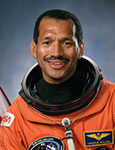

Lyndon B. Johnson Space Center
Houston, Texas 77058
|
National Aeronautics and Space Administration Lyndon B. Johnson Space Center Houston, Texas 77058 |
 |
Biographical Data |
||
Charles F. Bolden, Jr. (major general, USMC Ret.)
NASA ADMINISTRATOR
Nominated by President Barack Obama and confirmed by the U.S. Senate, retired Marine Corps Major General Charles Frank Bolden, Jr., began his duties as the twelfth Administrator of the National Aeronautics and Space Administration on July 17, 2009. As Administrator, he leads the NASA team and manages its resources to advance the agency's missions and goals.
Bolden's confirmation marks the beginning of his second stint with the nation's space agency. His 34-year career with the Marine Corps included 14 years as a member of NASA's Astronaut Office. After joining the office in 1980, he traveled to orbit four times aboard the space shuttle between 1986 and 1994, commanding two of the missions. His flights included deployment of the Hubble Space Telescope and the first joint U.S.-Russian shuttle mission, which featured a cosmonaut as a member of his crew. Prior to Bolden's nomination for the NASA Administrator's job, he was employed as the Chief Executive Officer of JACKandPANTHER LLC, a small business enterprise providing leadership, military and aerospace consulting, and motivational speaking.
A resident of Houston, Bolden was born Aug. 19, 1946, in Columbia, S.C. He graduated from C. A. Johnson High School in 1964 and received an appointment to the U.S. Naval Academy. Bolden earned a bachelor of science degree in electrical science in 1968 and was commissioned as a second lieutenant in the Marine Corps. After completing flight training in 1970, he became a naval aviator. Bolden flew more than 100 combat missions in North and South Vietnam, Laos, and Cambodia, while stationed in Namphong, Thailand, from 1972-1973.
After returning to the U.S., Bolden served in a variety of positions in the Marine Corps in California and earned a master of science degree in systems management from the University of Southern California in 1977. Following graduation, he was assigned to the Naval Test Pilot School at Patuxent River, Md., and completed his training in 1979. While working at the Naval Air Test Center's Systems Engineering and Strike Aircraft Test Directorates, he tested a variety of ground attack aircraft until his selection as an astronaut candidate in 1980.
Bolden's NASA astronaut career included technical assignments as the Astronaut Office Safety Officer; Technical Assistant to the Director of Flight Crew Operations; Special Assistant to the Director of the Johnson Space Center; Chief of the Safety Division at Johnson (overseeing safety efforts for the return to flight after the 1986 Challenger accident); lead astronaut for vehicle test and checkout at the Kennedy Space Center; and Assistant Deputy Administrator at NASA Headquarters. After his final space shuttle flight in 1994, he left the agency to return to active duty the operating forces in the Marine Corps as the Deputy Commandant of Midshipmen at the U.S. Naval Academy.
Bolden was assigned as the Deputy Commanding General of the 1st Marine Expeditionary Force in the Pacific in 1997. During the first half of 1998, he served as Commanding General of the 1st Marine Expeditionary Force Forward in support of Operation Desert Thunder in Kuwait. Bolden was promoted to his final rank of major general in July 1998 and named Deputy Commander of U.S. Forces in Japan. He later served as the Commanding General of the 3rd Marine Aircraft Wing at Marine Corps Air Station Miramar in San Diego, Calif., from 2000 until 2002, before retiring from the Marine Corps in 2003. Bolden's many military decorations include the Defense Superior Service Medal and the Distinguished Flying Cross. He was inducted into the U.S. Astronaut Hall of Fame in May 2006.
Bolden is married to the former Alexis (Jackie) Walker of Columbia, S.C. The couple has two children: Anthony Che, a lieutenant colonel in the Marine Corps who is married to the former Penelope McDougal of Sydney, Australia, and Kelly Michelle, a medical doctor now serving a fellowship in plastic surgery.
SEPTEMBER 2009